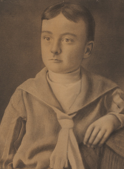
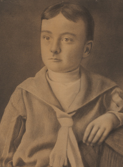

Edgar Poe was born in Boston, Massachusetts, on January 19, 1809, the second child of American actor David Poe Jr. and English-born actress Elizabeth Arnold Hopkins Poe. He had an elder brother, William, and a younger sister, Rosalie.[5] Their grandfather, David Poe, had emigrated from County Cavan, Ireland, around 1750.[6] His father abandoned the family in 1810,[7] and his mother died a year later from consumption (pulmonary tuberculosis). Poe was then taken into the home of John Allan, a successful merchant in Richmond, Virginia, who dealt in a variety of goods, including cloth, wheat, tombstones, tobacco, and slaves.[8] The Allans served as a foster family and gave him the name "Edgar Allan Poe",[9] although they never formally adopted him.[10] The Allan family had Poe baptized into the Episcopal Church in 1812. John Allan alternately spoiled and aggressively disciplined his foster son.[9] The family sailed to the United Kingdom in 1815, and Poe attended the grammar school for a short period in Irvine, Ayrshire, Scotland (where Allan was born) before rejoining the family in London in 1816. There he studied at a boarding school in Chelsea until summer 1817. He was subsequently entered at the Reverend John Bransby's Manor House School at Stoke Newington, then a suburb 4 miles (6 km) north of London.[11] Poe moved with the Allans back to Richmond in 1820. In 1824, he served as the lieutenant of the Richmond youth honor guard as the city celebrated the visit of the Marquis de Lafayette.[12] In March 1825, Allan's uncle and business benefactor William Galt died, who was said to be one of the wealthiest men in Richmond,[13] leaving Allan several acres of real estate. The inheritance was estimated at $750,000 (equivalent to $18,000,000 in 2021).[14] By summer 1825, Allan celebrated his expansive wealth by purchasing a two-story brick house called Moldavia.[15] Poe may have become engaged to Sarah Elmira Royster before he registered at the University of Virginia in February 1826 to study ancient and modern languages.[16][17] The university was in its infancy, established on the ideals of its founder Thomas Jefferson. It had strict rules against gambling, horses, guns, tobacco, and alcohol, but these rules were mostly ignored. Jefferson enacted a system of student self-government, allowing students to choose their own studies, make their own arrangements for boarding, and report all wrongdoing to the faculty. The unique system was still in chaos, and there was a high dropout rate.[18] During his time there, Poe lost touch with Royster and also became estranged from his foster father over gambling debts. He claimed that Allan had not given him sufficient money to register for classes, purchase texts, and procure and furnish a dormitory. Allan did send additional money and clothes, but Poe's debts increased.[19] Poe gave up on the university after a year but did not feel welcome returning to Richmond, especially when he learned that his sweetheart Royster had married another man, Alexander Shelton. He traveled to Boston in April 1827, sustaining himself with odd jobs as a clerk and newspaper writer,[20] and started using the pseudonym Henri Le Rennet during this period.